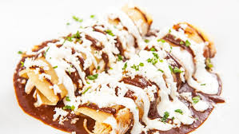

Enchilada Recipe

An enchilada is a corn tortilla rolled around a filling and covered with a savory sauce.
Originally from Mexican cuisine, enchiladas can be filled with various ingredients, including
meats, cheese, beans, potatoes, vegetables, or combinations. Enchilada sauces include chili-based
sauces, such as salsa roja, various moles, or cheese-based sauces, such as chile con queso.
Ingredients
- Chicken
- Onion and diced green chiles
- Beans
- Tortillas
- Cheese
- Toppings
- Enchilada sauce
Steps
- Prep oven and enchilada sauce. Preheat oven to 350°F.
- Sauté the filling mixture.
- Assemble the enchiladas.
- Bake uncovered for 20 minutes, until the enchiladas are cooked through and the tortillas are
slightly crispy on the outside.